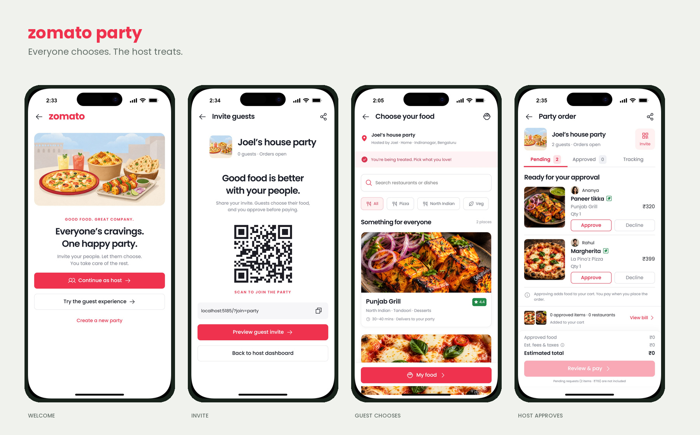
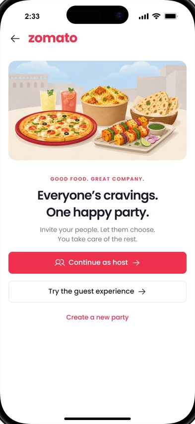
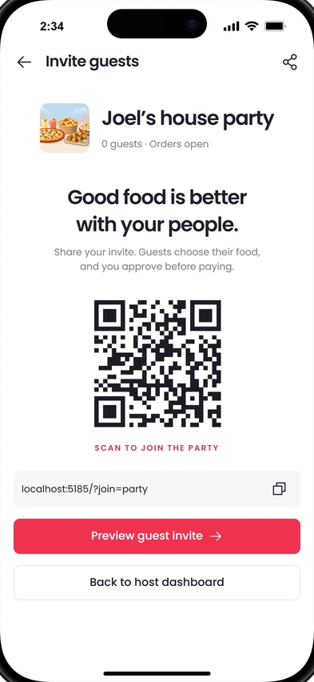
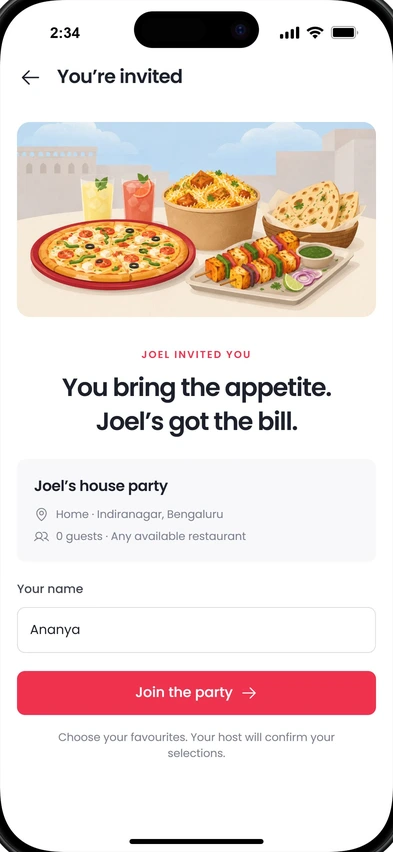
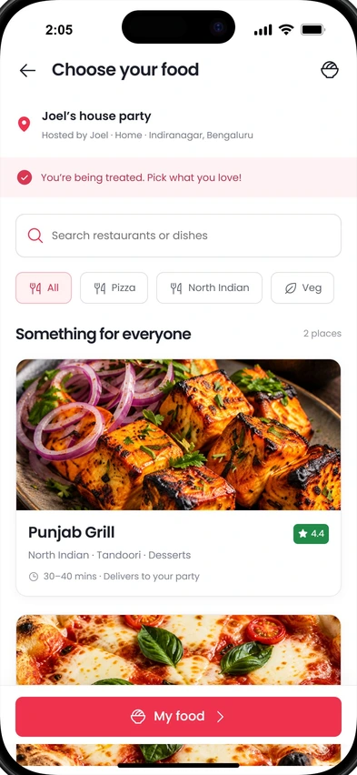
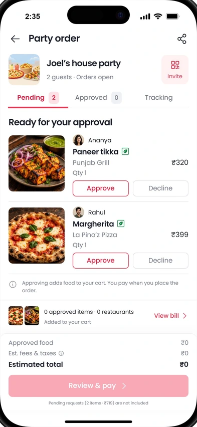
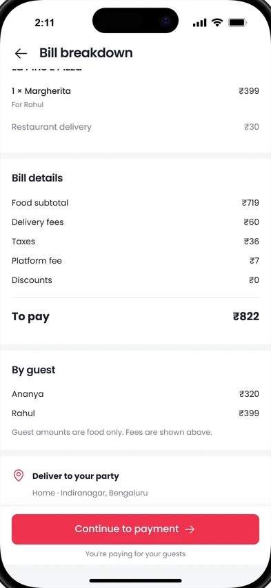

Set up → Invite → Approve → Pay
Name the party, set the delivery address, and share the invitation. Review guest requests and the complete bill before placing the order.
PRODUCT DESIGN / MOBILE EXPERIENCE / 2026
A shared ordering experience that gives guests the freedom to choose—and hosts one place to approve, pay, and keep the party fed.

MY CONTRIBUTIONConcept, UX flows, UI, prototype & motion
DELIVERABLEHost + guest mobile experience
STATUSIndependent concept · interactive prototype
01 / THE PROBLEM
Organising food for a group can mean collecting preferences over messages, juggling restaurant choices, and checking who ordered what. The host carries the coordination, while guests have little visibility into their food.
This concept asks: how could that coordination happen within one shared ordering experience?
02 / THE IDEA
The host starts a party and shares a link or QR code. Guests join and choose from restaurants available for the venue. Each selection becomes a request; the host decides what enters the payable cart.
The host pays once the cart is ready. Guests can then follow their own food, with delivery updates organised by restaurant.
03 / TWO ROLES, ONE PARTY
Name the party, set the delivery address, and share the invitation. Review guest requests and the complete bill before placing the order.
Join by link or QR, choose and customise food, then send it to the host. Follow approval and delivery status without seeing prices.
04 / THE WALKTHROUGH
05 / THE DESIGN DECISIONS
Sending food to the host does not place an order. Pending requests stay outside the payable amount until approved.
Guests focus on their preferences. The host sees item prices, restaurant delivery fees, taxes, and a breakdown of each guest’s selections.
Guests can browse available restaurants delivering to the venue, instead of having to agree on one restaurant menu.
Orders from different restaurants can arrive separately. Restaurant-level updates help everyone understand what is on the way.
06 / THE INTERFACE
White surfaces, red actions, compact food cards, and clear approval states follow the visual language of Zomato. A soft, food-only illustration gives the party a welcoming entry point.






07 / OUTCOME & NEXT STEPS
The interactive prototype covers setup, invitations, guest requests, approvals, payment, and tracking. The video demonstrates how the host and guest experiences connect.
Next, I would test whether guests distinguish a request from a confirmed order, whether hosts can review requests comfortably, and whether hiding prices makes the experience feel more welcoming.
This exploration has not yet been validated through user research or usability testing. It is a frontend demonstration: payments, tracking, and orders are simulated, and party state does not sync between devices.
08 / EXPLORE THE WORK
Design deliverables are PNG exports and editable frontend source; a Figma file is not included.